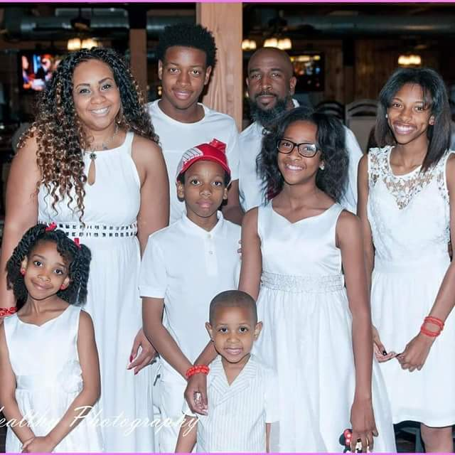

I am a first time coder, but it was always something that I was interested in. I was in Social Services for many years, but a series of unfortunate events left me unable to continue in the field. I turned and made the jump to reinvent myself, and here I am in the Cleveland Codes Program!
My hobby is narrating short stories. I love to see, hear, or read reactions to the audio. I narrate all kinds of fiction.
I'd be glad to do a narration for anyone as long as the story is interesting! There are links to some of my stories above.
 One of the most important things in my life is my family. It has been my honor and privilege to be a father and husband. Raising seven children is not without its challenges but it has been the highlight of my time here on earth! I was married on the 14th of November in 1998 and it has been one heck of a ride. Desmond Tutu once said...
You don't choose your family. They are God's gift to you, as you are to them.
I couldn't agree more! From the day I started my family, it has been a non-stop roller-coaster filled with every emotion imaginable! And I wouldn't change a thing!
Although I've always wanted to code, I've never taken it seriously until recently. I've done minor coding on different software platforms but never looked into the meat of the industry. After taking a hard look at it, I realized that this was the place I should have been a long time ago.
I was fortunate enough to be admitted to the Cleveland Codes fifth Cohort and it has been great. In just a short time I've learned so much and am eager to learn more. The instructional material is so interesting and my instructor is knowledgeable and patient with his students. I'm so glad that I took this course. I've found my passion.